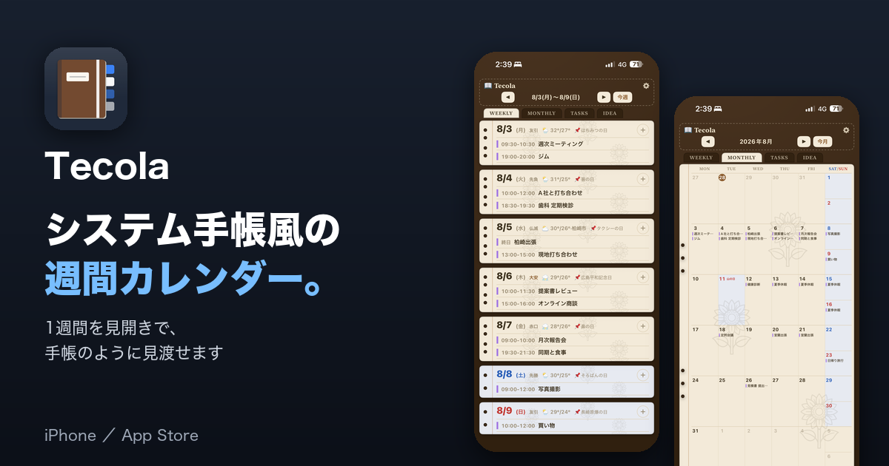

Tecola
システム手帳風の週間カレンダー（iPhone / iPad / Mac対応）

アプリについて
Tecolaは、革カバーと差し替え用紙をモチーフにした「週間見開き」スタイルのカレンダーアプリです。1週間の予定・タスク・六曜・天気を1画面で見渡せます。
- 週間ページ（iPadは手帳見開き・iPhoneは一覧表示）と月間ページ
- 六曜・今日は何の日・祝日表示
- 天気予報つき。「出張」の予定がある日は出張先の天気に自動切替
- Googleタスク連携（任意。ログインしなくてもカレンダー機能はすべて利用可能）
- ホーム画面ウィジェット、カバー色・用紙デザインの選択
よくあるご質問
Q. 予定が表示されません。
カレンダーへのアクセス許可が必要です。iOSの「設定」→「アプリ」→「Tecola」→「カレンダー」で「フルアクセス」を許可してください。表示するカレンダーはアプリ内の⚙️設定画面で選択できます。
Q. Googleアカウントは必要ですか？
不要です。Googleタスク連携は任意機能で、利用する場合のみ設定画面からログインします。
Q. Googleタスクのログインで「このアプリは Google で確認されていません」と出ます。
Tecola が Google の確認をまだ受けていないために出る画面です。次の順に進むとログインできます。
1. 左下の「詳細」を押します（右の青い「安全なページに戻る」を押すと、ログインをやめて戻ります）
2. 画面の下に出る「Tecola（安全ではないページ）に移動」を押します
3. Tecola がアクセスする内容を確かめて「続行」を押します
タスクの内容は、お使いの端末と Google のあいだで直接やりとりされ、開発者には届きません。
Q. 天気が表示されません。
天気の取得にはインターネット接続が必要です。予報範囲は約2週間先までのため、それより先の日付には表示されません。地点はアプリ内の設定画面（自宅地点・出張ルール）で変更できます。
Q. ウィジェットに何も表示されません。
先にアプリ本体を開き、カレンダーへのアクセスを許可してください。その後ホーム画面を長押し→「＋」→「Tecola」で追加できます。
Q. 六曜や「今日は何の日」の内容は正確ですか？
六曜は天文計算による参考情報、「今日は何の日」は一般的な記念日をまとめた参考情報です。行事や契約などの正式な判断にはご利用にならないでください。
お問い合わせ
ご質問・不具合のご報告・ご要望は、下記メールアドレスまでお気軽にご連絡ください。
通常2〜3営業日以内に返信いたします。不具合のご報告の際は、お使いの機種・iOSバージョン・状況（スクリーンショットなど）を添えていただけると助かります。
プライバシー
Tecolaは、ユーザーの個人データを収集しません。詳しくはプライバシーポリシーをご覧ください。
この作者のほかのアプリ
 文字アトリエ
文字アトリエ
すぐ起動して、すぐ書けるテキストエディタ PDF PageRebind
PDF PageRebind
PDF の結合・並べ替え・回転・抜き出しを、ページを見ながら Futamado
Futamado
キーボードだけでファイルを整理できる2画面のファイラー CellStay
CellStay
CSV を開いたときの形のまま直せます ひきだしメニュー
ひきだしメニュー
デスクトップをダブルクリックすると、カーソルの位置によく使うアプリのメニューが開くランチャー PhotoParcel
PhotoParcel
サムネイルを見ながら、写真をフォルダへサッと振り分け PhotoParcel Select
PhotoParcel Select
RAW の写真のセレクトを、キーだけで チャプたん
チャプたん
動画のチャプターを正しく作るための道具 チャプたんブックマーク
チャプたんブックマーク
動画をフォルダの中のフォルダで整理 MIDIアトリエ
MIDIアトリエ
鍵盤がなくても、パソコンのキーボードで曲を打ち込めます 事務電卓
事務電卓
机の上の実務電卓と同じ使い勝手 グッズ注文まとめ
グッズ注文まとめ
部活のグッズの申込を集計して、配布用・発注用の表と集金表まで作ります